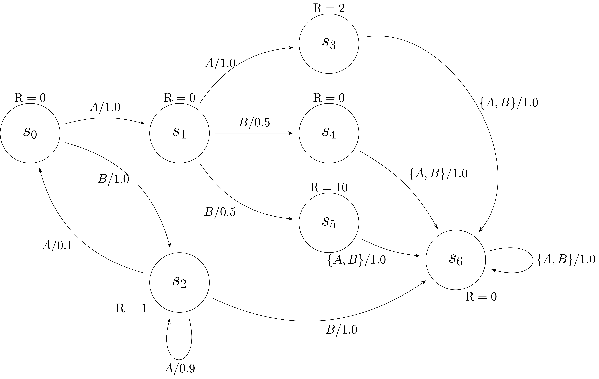
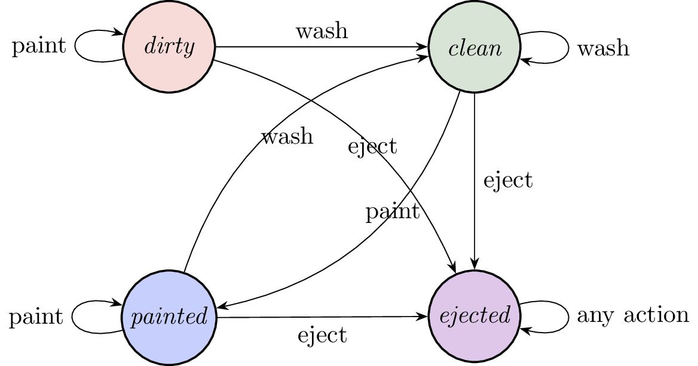
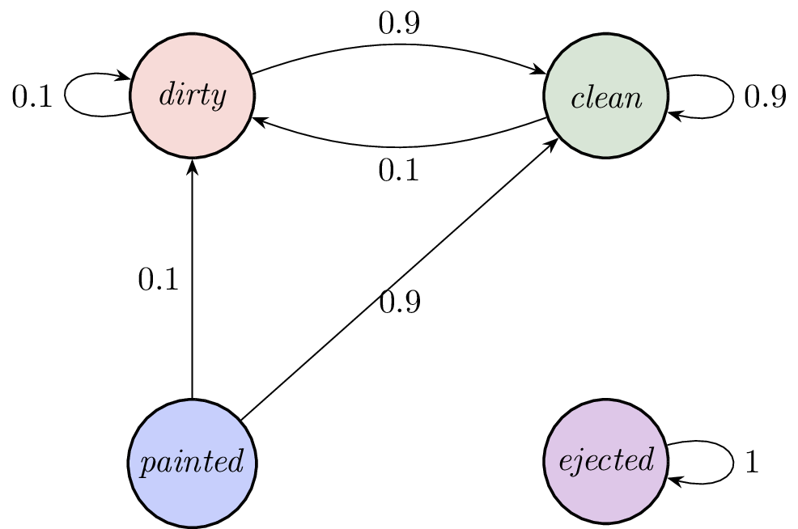
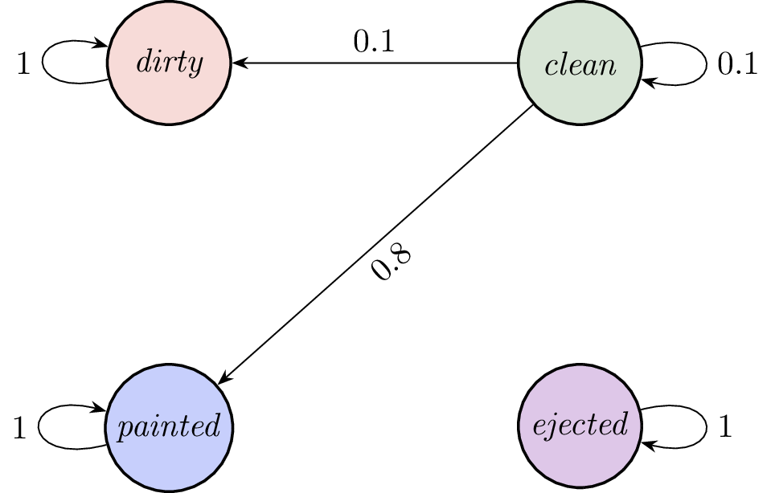
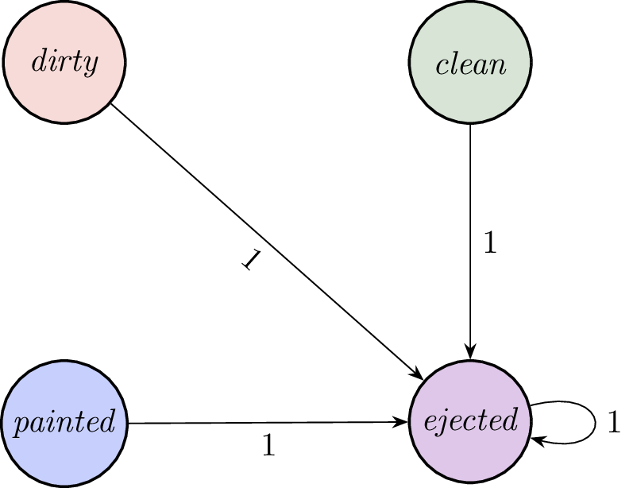
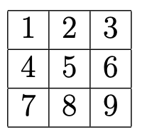
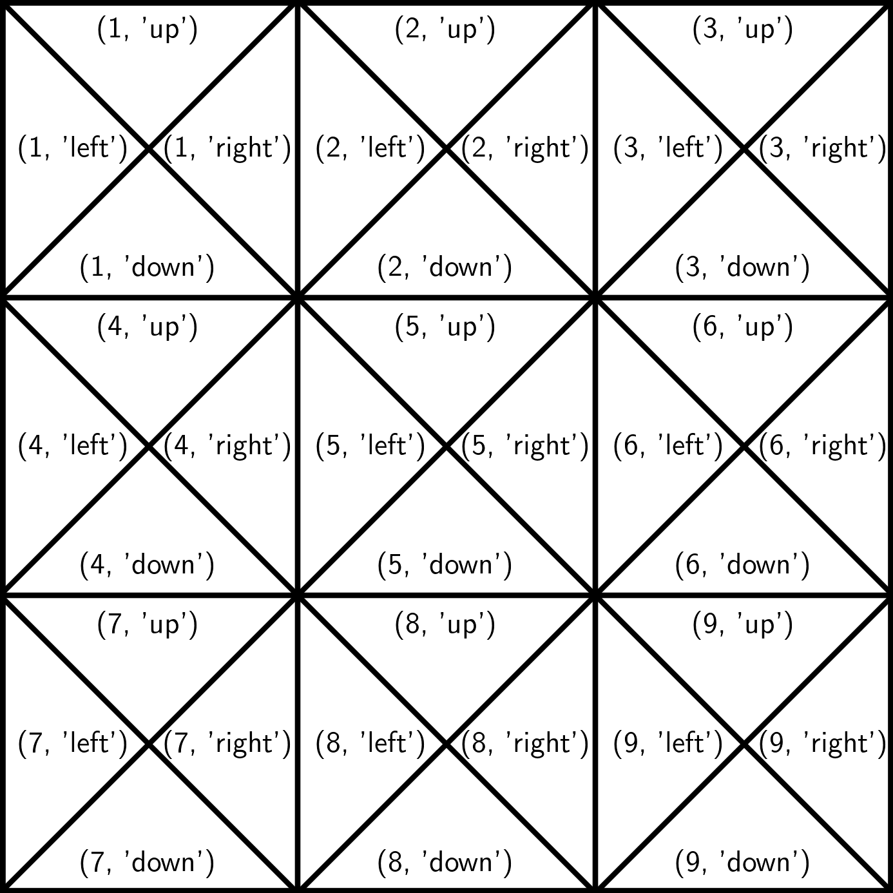
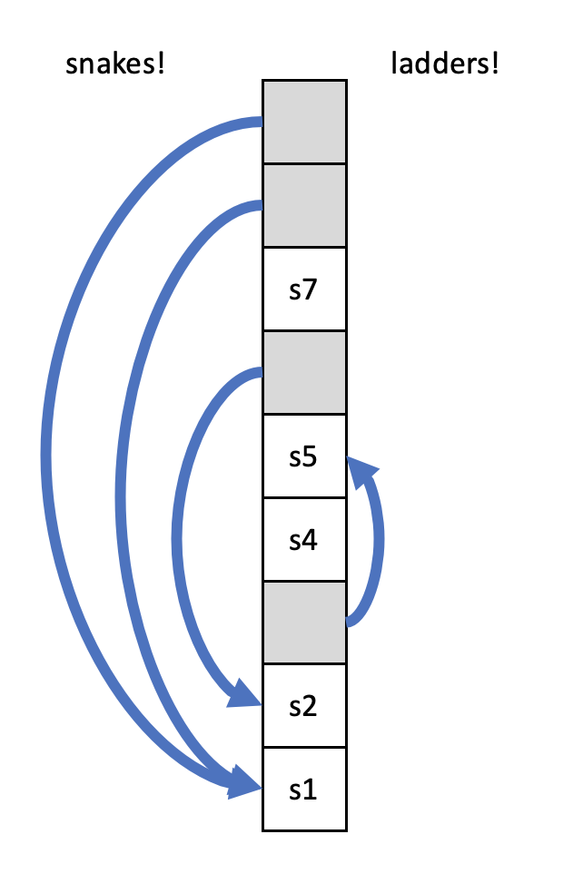
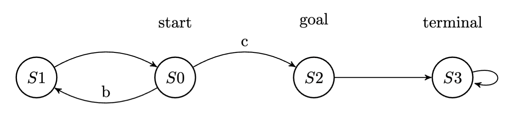

Rl
Problem 1 Tiny Value Iteration Example
Consider a tiny MDP with states \(s\in\{0,1,2,3\}\) and actions \(a\in\{b,c\}\). The reward and transition functions are:
where the transition matrix can be read row-wise. For example, the first row in \(\mathrm{T}(s_t,\text{b}, s_{t+1})\) means, when currently in state \(0\) and taking action \(b\), with probability 0.9 the agent will transition into state \(1\) and with probability 0.1 the agent will transition into state \(2\). Similarly, the first row in \(\mathrm{T}(s_t,\text{c}, s_{t+1})\) means, when currently in state \(0\) and taking action \(c\), with probability 0.1 the agent will transition into state \(1\) and with probability 0.9 the agent will transition into state \(2\).
Given the reward and transition functions above with an infinite horizon and a discount factor of 0.9, compute three iterations of value iteration.
Note that:
- All the value estimates start at 0: meaning, at iteration 0, $\mathrm{Q}(s, a) = 0$ for all \(s, a\) pairs
- on iteration \(t\) of value iteration, you only use values that were computed on iteration \(t-1.\)
- We recommend you compute the \(\mathrm{Q}\)-value iteration by hand to get a better understanding of the algorithm.
For each iteration, write eight numbers corresponding to our value function estimate, expressed as
at that iteration, accurate to three decimal places.
a) Iteration 1. Write a list of eight numbers for the value function estimate:
Answer: [0, 0, 1, 1, 0, 0, 2, 2].
Explanation: After one iteration, the \(\mathrm{Q}\) values from each
state are as described by the reward functions. Reward from being in
state 0 and taking any action is 0, reward from being in state 1 and
taking any action is 1, etc.
b) Iteration 2. Write a list of eight numbers for the value function estimate:
Answer: [0.81, 0.09, 1.09, 1.09, 1.62, 1.62, 2.18, 2.18].
Explanation: After an iteration, the value from starting at \(0\)
and taking action \(b\) is now \(0 + 0.9 \cdot (0.9 \cdot 1 + 0.1 \cdot 0).\)
The value from taking action \(c\) is now \(0 + 0.9 \cdot (0.1 \cdot 1 + 0.9 \cdot 0).\)
We do similar calculations for the remaining (state, action) pairs.
Iteration 2
.
c) When the horizon is \(h=2\), what is the best action to select in state 0?
- Action b
- Action c
Answer: Action b.
Explanation: \(\mathrm{Q}_2(0,b) > \mathrm{Q}_2(0,c)\) so we pick action \(b.\).
d) Iteration 3 (Hint: pay attention to previous iteration's \(\mathrm{Q}(0,b)\) and \(\mathrm{Q}(0,c)\) values). Write a list of eight numbers for the value function estimate:
Answer: [1.0287, 1.4103, 1.7542, 1.7542, 1.9116, 1.9116, 2.8523, 2.8523].
Explanation:
Iteration 3
Note that when computing \(\mathrm{Q}_3(1, *)\) we use \(0.9 \cdot \mathrm{Q}_2(0, b) = 0.9 \cdot 0.81\) instead of \(0.9 \cdot \mathrm{Q}_2(0,c) = 0.9 \cdot 0.09\) because \(0.81 > 0.09.\) In value iteration, we care about finding \(\mathrm{Q^*}\). In general, \(\mathrm{Q}^*(s,a)\) means we force ourselves to take action \(a\) from state \(s\), and then behave according to the policy from thereon. In this case our policy is the greedy policy \(\pi_3(s) = {\rm argmax}_a \mathrm{Q}_3(s,a)\). (Once we find \(\mathrm{Q^*}\), the (greedy) policy w.r.t. it, i.e. argmax \(\mathrm{Q^*}\) is the optimal policy).
Problem 2 Tiny MDP
We consider the same tiny MDP as in the exercises, with states \(s\in\{0, 1, 2, 3\}\) and actions \(a\in\{\text{b}, \text{c}\}\). The reward function is:
You get the reward associated with a state on the step when you take an action from that state. The reward function is the same for each of the two possible actions. The transition function for each action is below, where \(\mathrm{T}(i,x,j)\) is the conditional probability \(P(s_{t+1}=j\;|\;a_t=x, s_t=i)\), where rows correspond to the input states, and columns correspond to the output states.
Note that the only difference between the two actions is different transition probabilities from state 0, i.e., the first rows of the transition matrices.
Finite horizons
Consider two policies: one that always takes action \(a = \text{b}\) and one that always takes action \(a = \text{c}.\)
a) Which policy is best if you're starting from state 0 with horizon 2?
- Taking action b
- Taking action c
Answer: Taking action b.
Explanation: We compare the values from each of the policies.
Since \(0.9 > 0.1\), taking action b is the better policy.
b) Which policy is best if you're starting from state 0 with horizon 3?
- Taking action b
- Taking action c
Answer: Taking action c.
Explanation: Let \(\mathrm{V}_{h,a}(s)\) be the horizon \(h\) value from state \(s\) by always taking action \(a.\)
Since \(1.73 > 1.17\), the best policy for starting from state 0 with horizon 3 is taking action c.
Intuitively, it takes a horizon of 3 to realize that taking action c makes it more likely to get to state 3, which has higher reward than state 1.
c) What if we start in state 0 with horizon 5, take action c, land in state 2 with horizon 4, land in state 3 with horizon 3 (and get reward = 2!), and then land in state 0 with horizon 2? What action should we take now?
- Taking action b
- Taking action c
Answer: Taking action b.
Explanation: The previous actions have already yielded their
rewards. Now that we're in state 0 with horizon two, the best action
is 'b', as we have previously determined.
Infinite Horizon
Now, in the same tiny MDP, we are interested in the infinite-horizon discounted value case (refer to notes equation (11.8)), with discount factor \(\gamma=0.9\). For a given policy, we can write down a set of linear equations characterizing these values, in the form:
where \(r_i\) is the value of the reward function \(r_i = \mathrm{R}(s_i,a),~\forall i \in \{0,1,2,3\}\) while the \(c_{ij}\) are the entries to the transition function with respect to taking action \(a = c\).
Write the vector of \(r_{i}\) values, in the order shown above.
d) Write the matrix as a list of four numbers:
Answer: [0, 1, 0, 2].
Explanation: Thinking of \(v\) as a vector, we can write it as
\(v = r + Cv\; .\) Now, the only constant term guaranteed is the
reward at each state (i.e., that is independent of the values at
other states), while the rest of the value is tied to values of
other states. Thus, the constant part should be equal to the reward.
e) Write the coefficients on the right hand side of the equation for each of the values \(v_0\) thru \(v_3\) for the policy "always take action c".
(Make sure not to miss the discount factor).
Write the matrix as a list of four lists of numbers:
Answer:
.
Explanation: Consider \(v_0\), in other words the value from
starting in state 0. We know that after the first action, we are
guaranteed the reward defined by the reward function, 0. For future
steps, it depends on where we transitioned to. Thus, the
coefficients on the right hand side of the equation for each of the
values \(v_0\) thru \(v_3\) are the discount factor times probability of
transitioning to each of those states. The values for \(r_i\) are the
immediate rewards at each state.
Notice that you can also think of \(v\) as the one steady solution to the equation
i.e., if you have value \(v\), then applying the transition linear operation over the value distribution, scaling it by \(\gamma\) and adding the constant reward gives you the same values as before.
With discount factor
Let's consider a similar problem: finding a finite horizon Q-value function. Given horizon \(h\),an action \(a\), and a state \(s\), we want to find the optimal value \(Q_h(s,a)\) of taking action \(a\) from state \(s\) with \(h\) more steps to go. We will call this function \(q_{em}(s, a, h)\), which computes the horizon-\(h\) \(\mathrm{Q}\) value for state \(s\) and action \(a\) by using the definition of the finite-horizon \(\mathrm{Q}\) function (including a discount factor).
Consider again our "tiny" MDP with states \(\{0, 1, 2, 3\}\) and actions \(\{b, c\}\). Assume no discounting (i.e., discount factor = 1.0). The reward function is:
You get the reward associated with a state on the step when you exit that state. The transition function for each action is below, where \(\mathrm{T}[i,x,j]\) is the \(P(s_{t+1}=j | a=x, s_t=i)\).
f) What is \(q_{em}(0, \mathtt{'b'}, 0)\)?
Answer: 0.
Explanation: The horizon 0 \(\mathrm{Q}\) value is always 0; we have no horizon left
so can't transition out of any state, so can't earn any reward.
g) What is \(q_{em}(0, \mathtt{'b'}, 1)\)?
Answer: 0.
Explanation: In this case, we transition out of state \(s=0\)
to state \(s=1\) with probability 0.9, and to state \(s=2\) with
probability 0.1 (and are then done). However, transitioning out of
state \(s=0\) earned us \(\mathrm{R} = 0\) reward, for our reward function.
h) What is \(q_{em}(0, \mathtt{'b'}, 2)\)?
Answer: 0.9.
Explanation: Now things get interesting. For \(q_{em}(0, \mathtt{'b'}, 2)\)
we have a 0.9 probability of going into state
\(s=1\) and a 0.1 probability of going into state \(s=2\). Let's
consider the \(s=1\) branch first.
From state \(s=1\), we can consider the two possible actions, 'b' and 'c' but now with a horizon smaller by 1: \(q_{em}(1,\mathtt{'b'},1)\) and \(q_{em}(1,\mathtt{'c'},1)\). In both of those cases, those \(q_{em}\) values are zero (because the time horizon \(h=1\) means we won't transition out from the lower level state/action options). However, in taking any of those \(h=1\) actions after having moved into state \(s=1\) through the \((0, \mathtt{'b'}, 2)\) branch, now we do transition from state \(s=1\) in those cases, earning a reward \(\mathrm{R} = 1\). Thus in going down this first branch, we earn reward 1 with probability 0.9.
Now consider the \(s=2\) branch from \((0, \mathtt{'b'}, 2)\). The two subsequent possible actions are again 'b' and 'c', but now since we'd be moving out of state \(s=2\), that state transition doesn't earn any reward. So this branch earns 0 reward with 0.1 probability.
Summing those two branches from \((0, \mathtt{'b'}, 2)\), we get \(q_{em}(0, \mathtt{'b'}, 2) = 0.9\).
Problem 3 ABBA

Consider the MDP shown above. There are seven states \(\mathcal{S} = \{s_0, \ldots, s_6\}\) and two actions \(\mathcal{A} = \{ A, B \} \). Each arrow is labeled with one or more actions, and a probability value: this means that if any of those actions is chosen from the state at the start of the arrow, then it will make a transition to the state at the end of the arrow with the associated probability.
In this example, the reward function is state-dependent, e.g., \(\mathrm{R}(s_3, A) = \mathrm{R}(s_3,B) = 2.\) Remember that with horizon \(h = 1\), the agent can collect the reward associated with the state it is in, and then terminates.
Infinite Horizon
Consider the policy \(\pi\) that takes action \(B\) in \(s_0\) and action \(A\) in \(s_2\). If the system starts in \(s_0\) or \(s_2\), then under that policy, only those two states (\(s_0\) and \(s_2\)) are reachable.
Recall that, for a fixed policy \(\pi\), the infinite horizon value of a state \(s\) is defined as
Let the discount factor be \(\gamma = 0.8\). What are the infinite-horizon values \(\mathrm{V}^\pi_\infty(s_0)\) and \(\mathrm{V}^\pi_\infty(s_2)\)? Round your answer to at least two decimal points.
a) \(\mathrm{V}^\pi_\infty(s_0)\) = .
Answer: 100/27.
Explanation:
We can write out a system of two equations and two unknowns:
plugging in \(\gamma=0.8,\mathrm{R}(s_0, \text{B})=0,\) and \(\mathrm{R}(s_2, \text{A})=1\), we obtain:
Therefore, \(\mathrm{V}_\pi^\infty(s_2) = 1 + 0.72 \mathrm{V}^\pi_\infty(s_2) + 0.064 \mathrm{V}^\pi_\infty(s_2)\), so:
\begin{align} \mathrm{V}_\pi^\infty(s_2) &= \frac{1}{1 - 0.72 - 0.064} = \frac{125}{27} \approx 4.63\ \mathrm{V}_\pi^\infty(s_0) &= 0.8\mathrm{V}_\pi^\infty(s_0) = \frac{100}{27} \approx 3.70 \end{align}.
b) \(\mathrm{V}^\pi_\infty(s_2)\) = .
Answer: 125/27.
Explanation: Check the explanation to the previous question.
Horizon 1
Suppose that the horizon is \(h = 1\). What is the optimal value \(\mathrm{V}^*_{1}(s)\) for each of the following states with no discounting?
c) \(\mathrm{V}^*_{1} (s_0)\) = .
Answer: 0.
Explanation: With a horizon of \(h=1\), only one transition is taken.
Therefore, \(\mathrm{V}^*_1(s_0) = \mathrm{R}(s_0, \cdot ) = 0.\)
d) \(\mathrm{V}^*_{1} (s_1)\) = .
Answer: 0.
Explanation: With a horizon of \(h=1\), only one transition is taken.
Therefore, \(\mathrm{V}^*_1(s_1) = \mathrm{R}(s_1, \cdot ) = 0.\)
e) \(\mathrm{V}^*_{1} (s_2)\) = .
Answer: 1.
Explanation: With a horizon of \(h=1\), only one transition is taken.
Therefore, \(\mathrm{V}^*_1(s_2) = \mathrm{R}(s_2, \cdot ) = 1.\)
Horizon 2
Suppose that the horizon is now \(h=2\). What is the optimal action and value \(\mathrm{V}^*_{2}(s)\) for each of the following states with no discounting?
f) What is the optimal action for state \(s_0\) for horizon \(h=2\) with no discounting?
- A
- B
Answer: B.
Explanation:
With a horizon of \(h=2\), we must consider \(\mathrm{V}^*_1(s_1)\) and \(\mathrm{V}^*_1(s_2)\) (the horizon-\(1\) value of the only states accessible from state \(s_0\)).
From the previous parts, \(\mathrm{V}^*_1(s_2) > \mathrm{V}^*_1(s_1)\). Therefore the optimal action to take from state \(s_0\) for horizon \(h=2\) is \(B\).
g) \(\mathrm{V}^*_{2} (s_0)\) = .
Answer: 1.
Explanation: Note from the diagram that \(\mathrm{T}(s_0, B, s_2) = 1\).
Continuing from the previous part, we can compute \(\mathrm{V}^*_2(s_0)\) as:
h) What is the optimal action for state \(s_1\) for horizon \(h=2\) with no discounting?
- A
- B
Answer: B.
Explanation:
With a horizon of \(h=2\), we must consider \(\mathrm{V}^*_1(s_3) = 2, \mathrm{V}^*_1(s_4) = 0\) and \(\mathrm{V}^*_1(s_5)= 10\).
These values can be obtained from the diagram above by examining the reward in each state.
Since
the optimal action is \(B\).
i) \(\mathrm{V}^*_{2} (s_1)\) = .
Answer: 5.
Explanation:
Continuing from the previous part, we can compute \(\mathrm{V}^*_2(s_1)\) as:
j) What is the optimal action for state \(s_2\) for horizon \(h=2\) with no discounting?"""
- A
- B
Answer: A.
Explanation:
With a horizon of \(h=2\), we must consider \(V^*_1(s_0) = 0, V^*_1(s_2) = 1\) and \(V^*_1(s_6)= 0\).
Since \((0.9)(1) + (0.1)(0) = 0.9 > 0,\) the optimal action is \(A\), for the potential reward of \(0.9\) (and avoiding \(s_6\)).
k) \(\mathrm{V}^*_{2} (s_2)\) = .
Answer: 1.9.
Explanation:
Continuing from the previous part, we can compute \(\mathrm{V}^*_2(s_2)\) as:
Problem 4 1d grid
Consider a domain where states correspond to squares on a 1 by 10 grid. The state is the position of a robot on the board, \(i\), which ranges from 1 to 10. The robot can move one square East or West. In this question, assume there is no randomness in the robot's motion. The robot cannot move off the board; moving east in the east-most position will result in remaining in the east-most position. Similarly, moving west in the west-most position will result in remaining in the west-most position.
In the following sections, we will consider two different reward functions. Let \(\mathrm{V}^*(s)\) be the value of state \(s\) under any optimal policy \({\pi^*}(s)\) corresponding to the optimal value function; the horizon \(h\) is to be specified in the problem.
Negative Reward
There is a "goal" state \(i_g\), which will be specified later. Assume that the reward for taking any action from the goal state is 0, and that, once in the goal state, the robot "sticks" there forever. Further, assume the reward for all other actions is -1.
a) If the goal state is \(10\), \(h = 5\) and \(\gamma = 1\), what is \(\mathrm{V}^*(1)\)?
Answer: -5.
Explanation: If the horizon length is long enough that we can
reach the goal state, then reaching the goal state as quickly as
possible yields the highest rewards. If we can't reach the goal
state by the end of the horizon, we will accumulate -1 reward per
transition and all policies give us the same reward of -5, so
\(\mathrm{V}^*(1) = -5\).
b) If the goal state is \(10\), \(h = 15\) and \(\gamma = 1\), what is \(\mathrm{V}^*(1)\)?
Answer: -9.
Explanation: The (\(h, s, r\)) sequence will be: (15, 1, -1),
(14, 2, -1), (13, 3, -1), (12, 4, -1), (11, 5, -1), (10, 6, -1), (9,
7, -1), (8, 8, -1), (7, 9, -1), (6, 10, 0), (5, 10, 0), etc.,
yielding \(\mathrm{V}^*(1) = -9\).
c) If the goal state is \(10\), \(h = \infty\) and \(\gamma = 1\), what is \(\mathrm{V}^*(1)\)?
Answer: -9.
Explanation: By the argument above, \(\mathrm{V}^*(1) = -9\). Note that
once we are in state 10 and stay in state 10 (which gives reward 0),
we don’t accrue any further award.
d) If the goal state is \(10\) and \(h = \infty\), what is \(\mathrm{V}^*(1)\) in terms
of \(\gamma\), if \(0 < \gamma < 1\)? Recall that $\sum_{i = 0}^n
\gamma^i = \frac{ 1 - \gamma^{n + 1} }{ 1 - \gamma }$. You can use
gamma in your expression.
Answer: -(1-gamma**9)/(1-gamma).
Explanation: The first reward for going from state 1 to 2 is
-1. Then the reward from 2 to 3 is \(-1\times\gamma\). The reward
from 3 to 4 is \(-1\times\gamma^2\), and so on, until from state 9 to
10, which gives a reward of \(-1\times\gamma^8\). Therefore, the
total reward is: \(-1(1 + \gamma + \gamma^2 + \ldots + \gamma^8)\) =
\(-\frac{1 - \gamma^9}{1 - \gamma}\)
e) Is there a value of \(0 < \gamma < 1\) for which the optimal policy differs from the optimal policy for \(\gamma = 0.9\)?
- Yes
- No
Answer: No.
Explanation: No matter the value of the positive fractional
discount \(\gamma\), the only way we can maximize reward is by heading
towards the goal of 10, which will give us a nonnegative reward.
Positive Reward
Now, we will consider a different reward function: The reward for any action in the goal state is 1; reward for any action in any other state is 0; once in the goal state, the robot "sticks" there forever. \(h\) is the horizon.
f) If the goal state is \(10\), \(h = 5\) and \(\gamma = 1\), what is \(\mathrm{V}^*(1)\)?
Answer: 0.
Explanation: We have that the reward for any action out of
state 10 is 1, and you actually "stick" in the goal state, getting
1's forever more; the reward for any action in any other state is
0. If goal is 10 and h = 5, then \(\mathrm{V}^*(1)\) is 0 because we were not
able to reach goal state 10.
g) If the goal state is \(10\), \(h = 15\) and \(\gamma = 1\), what is \(\mathrm{V}^*(1)\)?
Answer: 6.
Explanation: Once the agent hits the goal state it is going
to get a reward of 1 for each step further that it lives. Its $(h,
s, r)$ sequence will be:
(15, 1, 0), (14, 2, 0), (13, 3, 0), (12, 4, 0), (11, 5, 0), (10, 6, 0), (9, 7, 0), (8, 8, 0), (7, 9, 0), (6, 10, 1), (5, 10, 1), (4, 10, 1), (3, 10, 1), (2, 10, 1), (1, 10, 1),
resulting in \(\mathrm{V}^*(1) = 6. \)
h) If the goal state is \(10\), \(h = \infty\) and \(\gamma = 1\), what is \(\mathrm{V}^*(1)\)?
Answer: +infty.
Explanation: With an infinite horizon and no discounting, we
get 1's forever, giving a \(\mathrm{V}^*(1)\) of +infinity.
i) If the goal state is \(10\) and \(h = \infty\), enter an expression for
\(\mathrm{V}^*(1)\) in terms of \(\gamma\), if \(0 < \gamma < 1\)? Recall that
\(\sum_{i = 0}^\infty \gamma^i = \frac{1}{1 - \gamma}\). You can use
gamma in your expression.
Answer: (gamma**9)/(1-gamma).
Explanation: We have a case similar to earlier, except we now
have discounting. Since it takes 9 steps to get to state 10 from
state 1, the first reward the robot collects would be 1 discounted 9
times, i.e., \(\gamma^9.\) The second reward would be \(\gamma^{10}\),
and so on. The total reward is hence \(\sum_{i = 9}^\infty \gamma^i\),
which can be rewritten as
\(\gamma^9\times\sum_{i = 0}^\infty \gamma^i = \gamma^9\times\frac{1}{1 - \gamma}\).
Another way of saying this is, if we were to start out in state 10, the amount of reward we'd get is \(\frac{1}{1 - \gamma}\). However, we have to walk 9 steps to get there, so that "chunk of reward" is discounted by \(\gamma^9\), making the final answer be \(\frac{\gamma^9}{1 - \gamma}\).
Problem 5 Deterministic wash-paint MDP
We will model aspects of a very simple wash and paint machine as a Markov decision process (MDP). An agent controls the actions taken, while the environment responds with the transition to the next state.
Our simple machine has three possible operations: "wash", "paint", and "eject" (each with a corresponding button). Objects are put into the machine. Each time you push a button, something is done to the object. The machine has a camera inside that can clearly detect what is going on with the object and will output the state of the object:
dirty, clean, painted, or ejected.
In this question, you will devise a policy that will take the state of an object as input and select a button to press until finally you press the eject button. You get reward +10 for the "eject" action on a painted object, reward 0 for "eject" action on an object that is dirty or clean, reward 0 for any action on an ejected object, and reward -3 otherwise.
We start out with a brand-new machine that operates deterministically, as illustrated in the state diagram below. Here state transition arcs are labeled with the action responsible for the transition. Specifically, when we "wash" a dirty or painted object, it becomes clean; and when we "paint" a clean object it becomes painted. If we "eject" a dirty, clean, or painted object, it becomes ejected. An ejected object stays ejected, for any action.

You will formulate the brand-new machine as an MDP, but with a deterministic transition function. It will be useful to write out and save tables/diagrams of your answers and show them to staff during the checkoff.
a) Write out a specification of the state space and action space.
Answer: states = [dirty, clean, painted, ejected]. actions = ["wash", "paint", "eject"].
The transition model is specified by the diagram above, where an arc from state \(s\) to state \(s'\) under action \(a\) indicates a transition probability \(\mathrm{T}(s,a,s') = 1\), and lack of an arc from \(s\) to \(s'\) indicates a transition probability \(\mathrm{T}(s,a,s') = 0\).
Define the reward function, \(\mathrm{R}(s,a)\). Given \(m\) states and \(n\) actions, the reward matrix should be \(m\) by \(n\), and will look something like:
wash paint eject
dirty -- -- --
clean -- -- --
painted -- -- --
ejected -- -- --
For the matrix in the response below, order the states as "dirty", "clean", "painted", and "ejected" and the actions as "wash", "paint", "eject".
b) Write the reward matrix: .
Answer:
.
c) Suppose we have an infinite horizon and discount factor \(\gamma=1\) (yes, this is an unusual assumption; can you think of why it is actually fine in this problem?). That means you can take as many steps as you want to, and all rewards are weighted equally whether they happen at the beginning or end of the action sequence. What would be the optimal action to take in each state? What would your total sum of rewards be (under the optimal policy) if you started in state dirty?
Answer:
- In state dirty: wash (reward sum is -3 -3 +10 = 4) for (dirty, wash), (clean, paint), (painted, eject)
- In state clean: paint (reward sum is -3 +10 = 7) for (clean, paint), (painted, eject)
- In state painted: eject (reward sum is 10) for (painted, eject)
- In state ejected: any (reward sum is 0).
d) Suppose we have a horizon of 2 and discount factor 1. That means you could only take two steps in total. Would the policy from the previous question change? Why, or why not? What would your total sum of rewards be (under the optimal policy) if you started in state dirty?
Answer: With horizon of 2, we can only take two steps. Optimal actions from starting states are:
- If start in state dirty: eject (reward sum is 0 + 0 = 0) for (dirty, eject), (ejected, [any])
- If start in state clean: paint (reward sum is -3 +10 = 7) for (clean, paint), (painted, eject)
- If start in state painted: eject (reward sum is 10 + 0 = 10) for (painted, eject), (ejected, [any])
- If start in state ejected: any (reward sum is 0) for (ejected, [any]), (ejected, [any])
If instead we do wash when we start in state dirty, then we end up in state clean with 1 step to go and a penalty of -3. We can just eject now for a total of -3, or do something else for a total of -6. In any case, it would have been better to eject in state dirty at the first step.
e) Suppose we have an infinite horizon and discount factor 0.5. Let's also assume that under our action policy, we always "paint" an object if it is clean, and always "eject" an object if it is painted. What would be the sum of discounted future rewards if you start with a dirty object in each of the policies listed next:
Your policy is to "eject" an object whenever it is dirty?
Your policy is to "wash" an object whenever it is dirty, followed by optimal actions after that?
Which policy yields a larger infinite horizon discounted reward?
Answer: You have a dirty part. We are asked to consider two cases:
You eject, getting penalty 0 and game is over. So, the value is 0.
You wash, paint, then eject in an effort to gain that big +10 reward. First, you wash, getting penalty -3 and transition to state clean. In state clean, you paint with penalty -3, but with discount 0.5, and transition deterministically to state painted. Finally, in state painted, you eject with reward +10, but with discount 0.5**2. Now the game is over (no more rewards accumulate in the future from the ejected state). So, the total value is -3 + 0.5 * (-3) + 0.5 * 0.5 * 10 = -2.
Better to eject.
Similar to the horizon 2 case, it's not worth washing because the deferred benefit "costs" too much, this time in terms of decaying future postive reward due to discounting.
Problem 6 Stochastic Wash & Paint MDP
Our wash and paint machine has been overused and is no longer as reliable. Now, many of its state transitions are stochastic in response to specific actions:
Wash:
- If you perform the "wash" operation on any object, whether it's dirty, clean, or painted, it will end up clean with probability 0.9 and dirty otherwise.
Paint:
- If you perform the "paint" operation on a clean object, it will become nicely painted with probability 0.8. With probability 0.1, the paint misses but the object stays clean, and also with probability 0.1, the machine dumps rusty dust all over the object and it becomes dirty.
- If you perform the "paint" operation on a painted object, it stays painted with probability 1.0.
- If you perform the "paint" operation on a dirty object, it stays dirty with probability 1.0.
Eject:
- If you perform an "eject" operation on any object, the object comes out of the machine and this fun game is over. The object remains ejected regardless of any further action.
Here is an example state diagram for the "wash" operation, now with arcs labeling the probability \(\mathrm{T}(s, a, s')\), for action \(a\) being "wash".

a) In order to visualize the stochastic machine MDP, draw the state diagrams for the "paint" and "eject" operations.
Answer: Now the state diagrams are:
| wash | paint | eject | |
|---|---|---|---|
| State Diagrams |
 |
 |
|
| Transition Matrices |
[[0.1, 0.9, 0, 0], [0.1, 0.9, 0, 0], [0.1, 0.9, 0, 0], [ 0, 0, 0, 1]] |
[[ 1, 0, 0, 0], [0.1, 0.1, 0.8, 0], [ 0, 0, 1, 0], [ 0, 0, 0, 1]] |
[[0, 0, 0, 1], [0, 0, 0, 1], [0, 0, 0, 1], [0, 0, 0, 1]] |
b) The state space, action space, and reward function remain the same as for our deterministic machine, but now our transition model has changed. Write out the transition matrices for the "wash", "paint", and "eject" actions. Specifically, provide three transition matrices (rows should sum to one, with the conventions used in this class), one transition matrix for each of the "wash", "paint", and "eject" actions.
Given \(m\) states, each transition matrix should be \(m\) by \(m\), corresponding to \(\mathrm{T}(s, a, s')\) with row indicating \(s\) and column \(s'\). Thus, a transition matrix for a given action \(a\) will look something like:
dirty clean painted ejected
dirty -- -- -- --
clean -- -- -- --
painted -- -- -- --
ejected -- -- -- --
For the prompt just below, order the rows and columns as dirty, clean, painted, ejected.
b) Write the transition matrix as a list of lists for "wash" action: .
Answer:
.
c) Write the transition matrix as a list of lists for "paint" action: .
Answer:
.
d) Write the transition matrix as a list of lists for "eject" action: .
Answer:
.
We next consider some finite horizon scenarios (and with discount factor \(\gamma = 1\)), but now with our stochastic wash & paint MDP. We consider running the Q-value iteration algorithm for these scenarios, using the same rewards as in problem 1.
e) First, assume horizon \(h = 1\). What is our optimal action \(a_1^* = \pi^*_1(\text{\color{blue}painted})\)? What is the value of the optimal action-value function \(\mathrm{Q}^*_1(s = \text{painted}, a_1)\)?
Answer: eject, reward 10.
Explanation:
Our optimal action \(a_1\) if in a painted state, is clearly to eject.
We earn reward 10 in this case.
f) If we instead have a finite horizon of \(h = 2\), what is our optimal action \(a_2^* = \pi^*_2(\text{\color{blue}painted})\) if we are in a painted state with two steps to go? Why is this different than (or the same as) \(a_1^*\)?
What is \(\mathrm{Q}^*_2(s = \text{painted}, a_2^*)\)? How does this compare to \(\mathrm{Q}^*_1(s = \text{painted}, a_1^*)\) and why?
Explanation: Our optimal action \(a_2\) if in a painted state, with two steps to go, is still to eject (same as with \(h = 1\)). If we take any other action, we incur a penalty and are then in a state where our second step will not make up for that penalty.
In this particular case, \(\mathrm{Q}^*_2(s = \text{painted}, a_2)\) does have the same value as \(\mathrm{Q}^*_1(s = \text{painted}, a_1)\), because we transition to the ejected state with probability 1 when we take action "eject" from the painted state.
f) Still with a finite horizon of \(h = 2\), now we start in state clean. In the deterministic (brand new) wash & paint machine, we saw that the optimal action was to paint, then eject, for a total accumulated reward of 7.
Now, with horizon \(h = 2\) in our stochastic wash & paint machine, we still hope to paint then eject. What is the value of following this (paint then eject) policy in clean state? Is it 7, more than 7, or less than 7? Why?
Explanation: Now, \(\mathrm{Q}^*_2(s = \text{clean}, a_2 = \text{paint}) < 7\), less than from before. We need to take into account the possibility that we will transition to some state \(s'\) different than the painted state we desired, then have no opportunity to gain the +10 reward with only one remaining step to go. Specifically, this optimal $\mathrm{Q}^_2(s = \text{clean}, a_2 = \text{paint}) = -3 + 0.810 + 0.2*0 = 5$, because we have 80% chance of getting to painted state (and then earning 10 on the second step), but 20% chance of getting to another state where our best choice is to eject with reward 0 on the second step.
g) We switch to an infinite-horizon scenario. For our stochastic machine, here is the infinite-horizon \(\mathrm{Q}_{\infty}^*\) function (computed via value iteration) for \(\gamma\) near 1.
wash paint eject
dirty [[ 2.32274541 -0.70048204 0. ]
clean [ 2.32274541 5.71581775 0. ]
painted [ 2.32274541 6.9 10. ]
ejected [ 0. 0. 0. ]]
What is the optimal thing to do with a clean object?
What will you do if it becomes dirty?
Does this optimal policy make intuitive sense?
Explanation: For clean part, best action: Clean is the second row; paint is the second column. Paint is the best thing to do to a clean part (largest Q for the second row).
If it becomes dirty, we're in the top row. Largest Q for the top row tells us that the best thing is to wash!
Yes, these make intuitive sense; for our machine that "usually" makes the desired transitions, these actions are what we would also take for a deterministic machine.
h) If the machine became much less reliable (i.e., washing and painting only achieve the desired transition, say, 20% of the time), how do you think the optimal policy would change?
Explanation: If the machine is highly unreliable, it will cost a lot more to get a painted part and eventually earn the reward of 10. Indeed, we'll spend most of the time in dirty or clean states accumulating penalties of -3. Instead, we should just eject right away even from dirty or clean states to avoid these penalties.
Problem 7 Q learning
Let's simulate the Q-learning algorithm! Assume there are states \(\mathcal{S} = \{0,1,2,3 \}\) and actions \(\mathcal{A} =\{\rm{'b'}, \rm{'c'}\}\), and discount factor \(\gamma = 0.9\). Furthermore, assume that all the \(\mathrm{Q}\) values are initialized to 0 (for all state-action pairs) and that the learning rate is \(\alpha = 0.5\).
Experience is represented as a list of 4-element tuples: the \(t\)th element of the experience corresponds to a record of experience at time \(t\): \((s_t, a_t, s_{t+1}, r_t)\) (state, action, next state, reward).
After each step \(t\), indicate what update \(\mathrm{Q}(s_t, a_t) \leftarrow q\) will be made by the Q learning algorithm based on $(s_t, a_t, s_{t+1}, r_t)\(. You will want to keep track of the overall table \)\mathrm{Q}(s_t, a_t)$ as these updates take place, spanning the multiple parts of this question.
As a reminder, the Q-learning update formula is the following:
You are welcome to do this problem by hand, by drawing a table specifying \(\mathrm{Q}(s,a)\) for all possible states \(s\) and actions \(a\). Alternatively, you may write a program which takes in the following history of experience:
experience = [(0, 'b', 2, 0), #t = 0
(2, 'b', 3, 0),
(3, 'b', 0, 2),
(0, 'b', 2, 0), #t = 3
(2, 'b', 3, 0),
(3, 'c', 0, 2),
(0, 'c', 1, 0), #t = 6
(1, 'b', 0, 1),
(0, 'b', 2, 0),
(2, 'c', 3, 0), #t = 9
(3, 'c', 0, 2),
(0, 'c', 1, 0)]
a)
t: S A S' R --------------- 0: 0 'b' 2 0
The \(t=0\) step of Q-learning will update the Q value of some state-action pair based on the experience tuple \((s_0, a_0, s_1, r_0)\).
After observing this tuple, the Q-value for one specific state-action pair is updated. What is the state in this state-action pair?
- 0
- 1
- 2
- 3
Answer: 0.
Explanation: Since we observe an experience in state 0, we update the Q value for state 0.
b) What is the action in the state-action pair that is updated?
- b
- c
Answer: b.
Explanation: Since action b was used in the experience at \(t = 0\), we update the Q value for action b.
c) Recall that \(s'\) denotes the next observed state. What is \(\max_{a'}\mathrm{Q}(s', a')\) for \(t=0\)?
Answer: 0.
Explanation: The \(\mathrm{Q}\) values are all initialized to 0, so the
maximum \(\mathrm{Q}(2, a')\) value is 0 for any action \(a'\) at this stage of Q
learning.
d) Putting it all together, what is the new Q-value for the state-action pair that is updated?
Answer: 0.
Explanation: We will make use of the Q-learning update rule
for an action \(a\) that takes state \(s\) to \(s'\) with reward \(\mathrm{R}\):
t: S A S' R --------------- 1: 2 'b' 3 0
The \(t=1\) step of Q-learning will update the Q value of some state-action pair based on the experience tuple \((s_1, a_1, s_2, r_1)\).
e) After observing this tuple, what is the state of the state-action pair that is updated? """
- 0
- 1
- 2
- 3
Answer: 2.
Explanation: Since we observe an experience in state 2, we update the Q value for state 2.
f) What is the action of the state-action pair that is updated?
- b
- c
Answer: b.
Explanation: Since action \(b\) was used in this experience, we update the Q value for action b.
g) What is \(\max_{a'}\mathrm{Q}(s', a')\) for \(t=1\)?
Answer: 0.
Explanation: We haven't updated anything with state 3 up to
this point, which is \(s'\) in this case, so the maximum is still at the
initial value of 0.
h) Putting it all together, what is the updated value that Q-learning makes for \(t=1\)?
Answer: 0.
Explanation: \(\mathrm{Q}^{new}(2,b) = 0.5\cdot \mathrm{Q}^{old}(2,b) + 0.5(0 + 0.9\cdot \max_{a'}\mathrm{Q}^{old}(3,a')) = 0 \; .\)
t: S A S' R --------------- 2: 3 'b' 0 2
The \(t=2\) step of Q-learning will update the Q value of some state-action pair based on the experience tuple $(s_2, a_2, s_3, r_2)$.
i) What is the updated value that Q-learning makes for \(t=2\)? Recall that \(\alpha=0.5\) and \(\gamma=0.9\).
Answer: 1.
Explanation:
t: S A S' R --------------- 3: 0 'b' 2 0 4: 2 'b' 3 0 5: 3 'c' 0 2
Recall that \(\alpha=0.5\) and \(\gamma=0.9\).
j) Write a list of three numbers for the updated Q values for \(t=3, 4, 5\): .
Answer: [0, .45, 1].
Explanation:
.
t: S A S' R --------------- 6: 0 'c' 1 0 7: 1 'b' 0 1 8: 0 'b' 2 0
Recall that \(\alpha=0.5\) and \(\gamma=0.9\).
k) Write a list of three numbers for the updated Q values for \(t=6, 7, 8\): .
Answer: [0, 0.5, 0.2025].
Explanation:
t: S A S' R --------------- 9: 2 'c' 3 0 10: 3 'c' 0 2 11: 0 'c' 1 0
Recall that \(\alpha=0.5\) and \(\gamma=0.9\).
l) Enter a list of three numbers for the updated Q values for \(t=9, 10, 11\): .
Answer: [0.45, 1.591125, 0.225].
Explanation:
Problem 8 Understanding Q-learning equation
You are helping a friendly alien named Zog learn to navigate a \(3\times3\) maze on the planet Quixara. Zog hopes to reach the shiny treasure located in a specific cell in the maze. Along the way, Zog may encounter other treasures and pesky space traps.
Your task is to use Q-learning to teach Zog to navigate the maze efficiently. The maze grid is structured as follows:

Maze Details:
- Any action in Cell 9 (bottom-right) gives a "gold" reward of +10.
- Any action in Cell 5 gives a "trap" reward of \(\mathbf{-1}\).
- Any action in Cell 2 gives a "silver" reward of \(\mathbf{+1}\).
- All other (state, action) pairs give a boring reward of \(\mathbf{0}\).
Movement and Transitions: Zog can attempt to take an action in ( up, down, left,or~right); however, the maze is unstable, and the transitions are unknown. For example, the probability of transitioning from location 1 to location 9 as a result of action "up" could be positive.
Greedy Action-Selection: Zog will explore the maze using an \(\epsilon\)-greedy policy (with \(\epsilon\) value to be specified in the sub-parts). When there is a tie, Zog chooses the action in this order: {bf up, down, left, right}.
Discount factor: \(\gamma,\) the discount factor is set to 0.9.
Before taking any actions, Zog’s Q-table is initialized with zero values for all state-action pairs.
For part (a) to part (c), \(\epsilon=0,\) that is, we use pure greedy action selection.
a) Define the Q-learning update equation Zog should use to learn from each step. Use \(\alpha\) to denote the learning rate.
Explanation: The Q-learning update equation is:
$ Q(s, a) \leftarrow Q(s, a) + \alpha \left( r + \gamma \max_{a'} Q(s', a') - Q(s, a) \right)$
where:
- $ s $ is the current state (cell).
- $ a $ is the action taken.
- $ s' $ is the observed resulting state after taking action $ a $.
- $ r $ is the reward received.
- $ \alpha $ is the learning rate.
- $ \gamma $ is the discount factor (set to 0.9).
b) If Zog starts in Cell 4, what would be Zog's first action?
Explanation: Zog's first action would be to move up. Due to the tie-breaking.
c) Is there a learning rate \(\alpha\) such that Zog always chooses the action you gave in the previous part, any time they visit Cell 4?
Explanation: Yes. When \(\alpha = 0\), we never update our reward.
Reset the Q-table with zeros for all (state, action) pairs. For all subparts below, assume that we change the action-selection strategy to \(\epsilon\)-greedy with some unknown \(\epsilon,\) and fix the learning rate \(\alpha\) to be 0.5.
d) Zog ended up following this trajectory of (state, action, rewards): \ (1, right, 0) \(\rightarrow\) (2, right, 1)\(\rightarrow\) (3, down, 0) \(\rightarrow\) (6, down, 0) \(\rightarrow\) (9, down, 10). Assume after state 9 we don't transition to state 2. Solve for all non-zero Q-values after this trajectory?

Explanation:
Two entries are updated to be non-zero.
First, Q(2, right) = 0.5*(1+0) = 0.5.
Second, Q(9, down) = 0.5*(10+0) = 5.
e) Adjust the reward if you want Zog to prioritize avoiding traps over collecting silvers. How would you adjust the silver reward? How would you adjust the trap penalty?
Explanation: We could decrease silver reward or make the trap penalty more negative.
f) Now assume \(\epsilon=0.4\). Using the Q-table from the previous part, what is the probability that Zog chooses action down when in state 6?
Explanation:
\(\epsilon=0.4\) means that there is a \(1-\epsilon=0.6\) chance that Zog picks the greedy action, which is down from state 6. There is an additional \(\frac{\epsilon}{4}=0.1\) chance Zog picks down, since the exploration is equally split between all possible actions. Thus the total probability Zog picks down from state 6 is \(0.7\).
Problem 9 Snakes and Ladders
You are playing a simplified version of a classic game, sometimes called "Snakes and Ladders" in English.

- You are moving up a 1-dimensional track with squares \(s_1, s_2, s_4, s_5, s_7\), as shown above.
- You have two actions: climb and quit.
- If you climb from state \(s_i\) then with probability \(0.5\) you go up one square, and with probability \(0.5\) you go up two squares.
- However! if the square you land on has a ladder going up from it, then you automatically, instantaneously, with probability 1 move to the square the ladder goes to.
- And! if the square you land on has a snake going down from it, then you automatically, instantaneously, with probability 1 move to the square the snake goes to.
- For example, in our case, if you start in state \(s_5\) and climb there is a \(0.5\) chance you'll end up in square \(s_2\) (because you move up one but hit a snake and fall back down) and a \(0.5\) chance you'll end up in square \(s_7\). If you climb from \(s_7\) then you will go back to square 1 with probability \(1.0\).
- If you quit then the game is over and you get to take no further actions.
- Each new episode starts in state \(s_1\).
- The reward for choosing climb in any state is 0.
- The reward for choosing quit in state \(s_i\) is \(i\).
In the following, you need to submit actions or \(\mathrm{Q}\)-values for the states \(s_1\), \(s_2\), \(s_4\), \(s_5\) and \(s_7\).
a) What is the optimal horizon 1 policy? Write your answer as a list of five strings, each being either "climb" or "quit", corresponding to the optimal action for \(s_1\), \(s_2\), \(s_4\), \(s_5\), and \(s_7\), in that order.
Answer: quit, quit, quit, quit, quit.
Explanation: Because the horizon is 1, there are no rewards
in the future, so the only reward we can get is the one at this
current time. If we climb, we get a reward of 0, and if we quit, we
get a reward of \(i\), which is always greater than 0, so it is
optimal to quit in every state.
b) If you initialize the \(\mathrm{Q}\) values of all the states to 0, and do one iteration of undiscounted (\(\gamma = 1\)) value iteration, what is the resulting \(\mathrm{Q}\) value function?
Answer: [[1, 2, 4, 5, 7], [0, 0, 0, 0, 0]].
Explanation: After one iteration, \(\mathrm{Q}(s, a) = \mathrm{R}(s, a) + 0\),
so, for example, \(\mathrm{Q}(s_1, \textbf{quit}) = 1, \mathrm{Q}(s_1, \textbf{climb}) =0\), etc.
c) If \(\gamma = 1\) (that is, there is no discounting) what is the optimal infinite-horizon policy? Give your answer as a list of five strings, each being either "climb" or "quit", corresponding to the optimal action for \(s_1\), \(s_2\), \(s_4\), \(s_5\), and \(s_7\), in that order.
Answer: climb, climb, climb, climb, quit.
Explanation: We only get rewards when we quit, so the
maximum reward of \(7\) is attained by quitting in \(s_7\). Because
there is no discounting, the highest reward is obtained by climbing
in every state that is not \(s_7\) and then quitting when we get to
\(s_7\). Note that this policy induces a finite state markov chain,
and the steady-state vector of this markov chain tells us that the
long-term probability that we are in \(s_7\) is 1.
d) Now let's consider discounting. State an inequality involving numeric values, \(\gamma\), \(Q(s_2, \textbf{climb})\), and \(Q(s_7, \textbf{climb})\), specifying the condition under which the optimal action in \(s_5\) is to quit.
Answer: 10 / (\(Q(s_2, \textbf{climb})\) + 7).
Explanation: \(Q(s_5, \textbf{climb}) = 0 + \gamma(0.5 *7 + 0.5* Q(s_2, \textbf{climb}))\) and
\(Q(s_5, \textbf{quit}) = 5\).
Note that it's not obvious that we choose to climb in \(s_2\). We do this when \(Q(s_2, \textbf{climb}) > Q(s_2, \textbf{quit})\). But this will likely be the case. The worst we can get in \(s_4\) and \(s_5\) is 4 and 5 respectively, by quitting. So we can derive that this will hold if \(\gamma(0.5 *4 + 0.5* 5) > 2\), which happens if \(\gamma > 4/9\).
Back to the original problem, we have \(5 > 0 + \gamma(0.5 * 7 + 0.5 - Q(s_2, \textbf{climb}))\). Rearranging, we get \(\gamma < \frac{10}{7+ Q(s_2, \textbf{climb})}\).
Sneaking Snakes and Lurking Ladders
What if we have to play snakes and ladders, but we don't know where the snakes and ladders actually are? Assume we know the rewards, but not the transition model. We'll try \(\mathrm{Q}\) learning to address this problem.
During learning, after executing the quit action and getting a reward, the current learning episode terminates. We then initialize a new learning episode, and we always start the new episode in square 1. We will use a discount factor of \(\gamma = 1\) throughout.
e) If we do purely greedy action selection during \(\mathrm{Q}\)-learning (that is \(\epsilon = 0\)), starting from all 0's in our \(\mathrm{Q}\) table and where ties are broken in favor of the climb action, what (roughly) will the \(\mathrm{Q}\) function be after 1000 steps?
Answer:
Explanation: Because the reward is zero for climbing in any state, \(\mathrm{Q}(s, \text{climb})\) will be zero for all states. \(\mathrm{Q}(s, \text{quit})\) will also be zero for all states because we will never take a quit action, so we won't ever update it.
f) If we do purely greedy action selection during \(\mathrm{Q}\)-learning (that is \(\epsilon = 0\)), starting from all 0's in our \(\mathrm{Q}\) table and where ties are broken in favor of the quit action, what (roughly) will the \(\mathrm{Q}\) function be after 1000 steps?
Answer:
Explanation: Assuming when we start in \(s_1\) when we start a new episode, we will never visit any states other than \(s_1\), so the \(\mathrm{Q}\) values for any states other than \(s_1\) will never change. \(\mathrm{Q}(s_1, \text{quit}) = 1\) because \(R(s_1, \text{quit}) = 1\) and the episode ends with a quit action.
Assume we start with a tabular \(\mathrm{Q}\) function on states \(s_1\), \(s_2\), \(s_4\), \(s_5\) and \(s_7\), initialized to all 0's. Then we get the following experience, consisting of three trajectories, shown below as (state, action, reward) tuples.
Using learning rate \(\alpha = 0.5\), what is the \(\mathrm{Q}\) function after each of these trajectories? Do not reset all your \(\mathrm{Q}\) values back to 0 after each trajectory --- assume this is all a single execution of the \(\mathrm{Q}\) learning algorithm on three episodes of experience.
For each trajectory, give your answer as a 2 x 5 array of numbers, in the form
g) After \(((s_1, \textbf{climb}, 0), (s_2, \textbf{climb}, 0), (s_5, \textbf{climb}, 0), (s_7, \textbf{quit}, 7)),\) what is the \(\mathrm{Q}\) function?
Answer: [[0, 0, 0, 0, 3.5], [0, 0, 0, 0, 0]].
Explanation:
h) After the additional experience \((s_1, \textbf{quit}, 1),\) what is the \(\mathrm{Q}\) function?
Answer: [[0.5, 0, 0, 0, 3.5], [0, 0, 0, 0, 0]].
Explanation:
.
i) After the additional experience \(((s_1, \textbf{climb}, 0), (s_2, \textbf{climb}, 0), (s_5, \textbf{climb}, 0), (s_7, \textbf{quit}, 7)),\) what is the \(\mathrm{Q}\) function?
Answer: [[0.5, 0, 0, 0, 5.25], [0, 0, 0, 1.75, 0]].
Explanation:
Problem 10 Goal Reward vs SSP
Consider an environment with two possible actions (\(b\) and \(c\)) and four states (\(S0\), \(S1\), \(S2\), \(S3\)).
The transition model is unknown to the agent. However, in all our experiments, we observed the following (state, action) pair to next state transitions:
where \(\ast\) represents either \(b\) or \(c\), i.e., both actions lead to the same outcome.
You may find the state transition diagram below helpful (it's good practice to draw such diagrams in MDP/RL settings). Do note that this diagram only represents the observed transitions.

Some notes:
- The agent starts in state \(S0\).
- The goal state is \(S2\), and \(S3\) is a terminal state.
- Assume that if there are ties in the \(\mathrm{Q}\) function for actions \(b\) and \(c\) in a state, then we pick action b.
- Assume the \(\mathrm{Q}\) function is initialized to 0 for every state-action pair and that, after every episode (sequence of actions) of length 10, the agent is restarted in state \(S0\).
- Assume a learning rate of \(\alpha = 0.5\).
- Assume an \(\epsilon\)-greedy strategy with \(\epsilon = 0\).
- Assume a discount factor of \(\gamma = 1\).
Note that we restart the agent in state \(S0\) after every 10 steps because otherwise it may reach \(S3\) and stay there forever.
Next, we will see two typical reward functions for domains with a goal state: Goal-reward setup, and Stochastic-shortest-path (SSP) setup, and we will study how each scheme affects the exploration of the state space.
Goal-reward
In the goal-reward case, every action taken from the goal state \(S2\) gives an immediate positive reward of \(1\), and leads to a zero-reward next state (in fact terminal state) \(S3\) that can never be escaped. Taking any action from any state other than \(S2\) provides zero reward. In other words, we have a reward function which outputs \(0\) for every state-action pair, except for \(\mathrm{R}(S2, *) = 1\).
a) What action will be selected the first time the agent encounters \(S0\)?
- b
- c
Answer: b.
Explanation: In the first encounter of S0, the agent picks action b, because there is a tie in Q-value between (S0,b) and (S0,c).
b) What action will be selected the second time the agent encounters \(S0\)?
- b
- c
Answer: b.
Explanation: After round one the Q-value of (S0,b) remains 0, so next time the agent finds itself in S0, it still picks action b.
c) What action will be selected the hundredth time the agent encounters \(S0\)?
- b
- c
Answer: b.
Explanation: Agent keeps picking action b, keeps getting 0 reward, keeps being in a tie between (S0,b) and (S0,c), and keeps choosing b over and over.
Stochastic shortest path
In the stochastic shortest path (SSP) case, we put zero reward on taking any action from the goal state \(S2\). Every action taken from \(S2\) leads to a zero-reward terminal state \(S3\) that can never be escaped. We put \(-1\) in rewards everywhere else. In other words, we have a reward function which outputs \(-1\) for every state-action pair except \(\mathrm{R}(S2, \ast) = \mathrm{R}(S3, \ast) = 0\).
(Note that in this example, we have deterministic transitions; nothing "stochastic" yet.)
d) What action will be selected the first time the agent encounters \(S0\)?
- b
- c
Answer: b.
Explanation: In the first encounter of S0, the agent picks action b, because there is a tie in Q-value between (S0,b) and (S0,c).
e) What action will be selected the second time the agent encounters \(S0\)?
- b
- c
Answer: c.
Explanation: After round one the Q-value of (S0,b) gets updated to a negative value, so next time the agent finds itself in S0, it picks action c.
f) What action will be selected the hundredth time the agent encounters \(S0\)?
- b
- c
Answer: c.
Explanation: \(\mathrm{Q}\) values continue to get updated as learning proceeds. By the time we reach the 100th iteration, the learned \(\mathrm{Q}\) values should get more stable and approach the true \(\mathrm{Q}\) values.
The true \(\mathrm{Q}\) value reflects the fact that action c is better when you are in state S0, and and so agent will choose c at the 100th iteration.
In this example, the Goal-Reward formulation prevents us from learning the better action, c. The SSP formulation allows us to learn from our mistake and try the unexplored (and better) action, c.
We note however, that there is no reward function that will work best for all problems. Different problems require different ideas. Another idea is that of designing the reward function to incentivize exploring states that have been visited the least throughout the exploration (curiosity-based ideas).
This is related to the concept of reward shaping, where changing the reward changes the task and how the agent functions. Researchers sometimes spend a lot of time hand-tuning reward functions (although this has severe pitfalls, since the reward implicitly specifies the task and shaping the reward changes the task.)